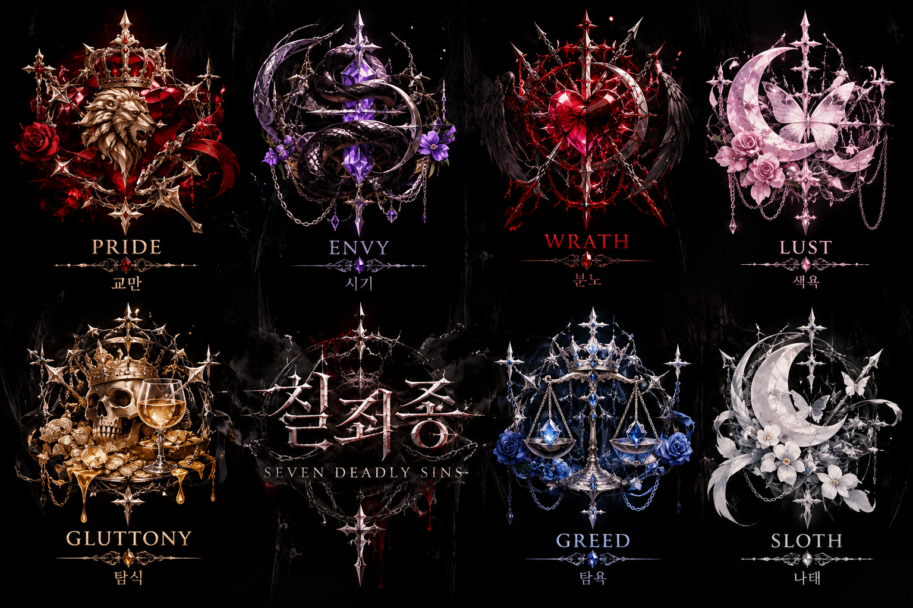

죄명은 코드네임
담당 죄악은 이름이자 조직에서의 정체성입니다.

칠죄종은 7대 죄악의 죄명을 코드네임으로 사용하는 마피아 집단입니다. 각 멤버의 역할, 상징, 무기와 말투까지 하나의 조직 기록으로 남깁니다.
수장, 메디컬, 협상가, 정보상, 행동대장, 처리반, 해커. 각자의 욕망은 조직 안에서 고유한 역할로 변합니다.
VII담당 죄악은 이름이자 조직에서의 정체성입니다.
각자의 전문성과 개성이 하나의 조직을 움직입니다.
동물과 사물의 상징이 인물의 서사를 완성합니다.
대사와 사투리, 버릇까지 각자의 목소리를 기록합니다.
사용자가 지정한 캐스트 순서대로 구성했습니다. 카드를 선택하면 세부 프로필을 볼 수 있습니다.
조직의 메디컬
VIEW PROFILE ↗행동대장
VIEW PROFILE ↗정보상
VIEW PROFILE ↗조직의 수장
VIEW PROFILE ↗협상가
VIEW PROFILE ↗현장 처리 담당
VIEW PROFILE ↗해커이자 ‘마스코트 막내 공주’
VIEW PROFILE ↗SEVEN NAMES · ONE ORGANIZATION